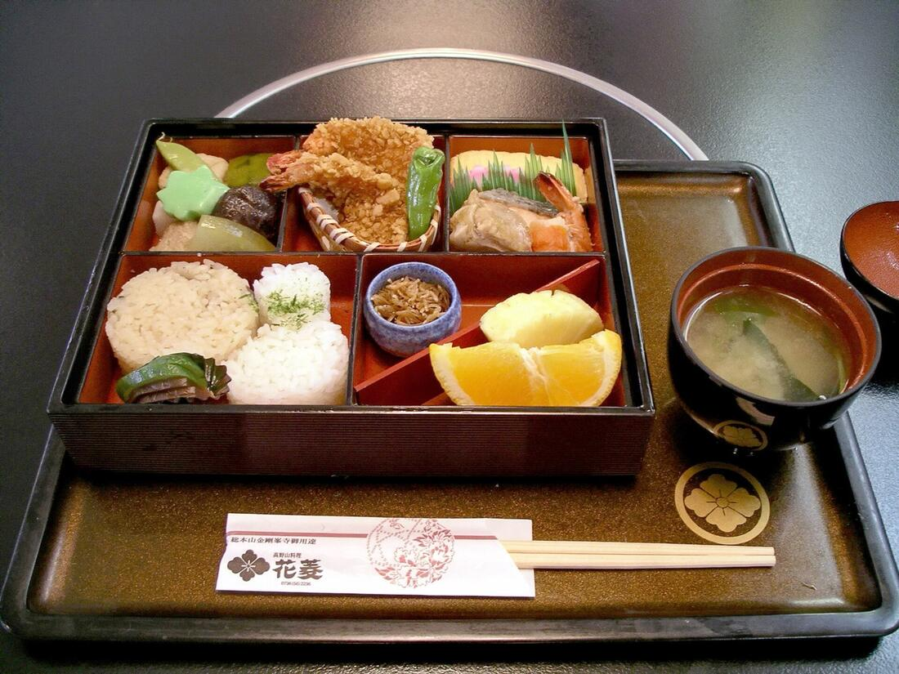

A meal packed with care
In Japan, a lunch box is never just lunch. It is a small, balanced meal that someone planned, cooked and arranged for you to enjoy later.

bentō (n.), often said politely as obentō (お弁当): a single-portion meal packed in a box and eaten away from home, at school, at work, on a train or under the cherry blossoms.
A typical bentō holds rice, a main dish of fish or meat, a few cooked vegetables, and something small and sharp: a pickle, a pickled plum, a slice of fruit. Everything fits snugly into one box so nothing slides around on the journey.
bentō can be made at home before school, picked up at a convenience store, or bought on a station platform before a long train ride. What they share is an idea: a meal should look good, taste good when eaten cool, and stay balanced.
That is why bentō makers think about colour as much as flavour. A bright yellow egg roll next to green broccoli and a red tomato is not decoration for its own sake. It is a sign that the box holds a mix of foods, cooked in different ways.
And there is feeling in it too. For many people in Japan, the memory of opening a lunch box made by a parent, and finding a favourite food tucked in a corner, is one of the warmest memories of school.
“Every compartment is a small decision about colour, flavour and care.”The idea behind every bentō
Say it in Japanese
I make a bentō.
This is an ekiben.
Thank you before eating.
Thank you after eating.
The bentō is delicious.